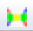
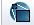
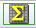
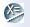

Visualizing data in the IRSA/WISE Image Service
Once a search is complete, the lower portion of the results page
is populated with a row of three or four images (depending on the selected image set) - the WISE images from each
band with wavelength increasing from left to right. These display
windows appear as a standard size of 350 x 350 arcsec. Smaller returned
images will appear as an inset within this window, and larger images
will initially only have the central 350 x 350 arcsec displayed.
Note that because WISE band 4 has a resolution of 12 arcsec rather
than 6 arcsec due to the small telescope aperture, the band 4 images are
binned by a factor of two.
Clicking the expand icon  in the image corner
will display the selected image at full size in a separate window and launch the
Visualization toolbar enabling manipulation of the image. Alternatively you can
click on the toolbar icon to just launch the Visualization toolbar.
Note that the sky coverage of the WISE image with respect to the IRAS 100 micron
map is shown in the upper left hand corner under the "Coverage" tab. A
neighboring tab displays a 3 color composite of the WISE 3.4 (blue),
4.6 (green), and 12 micron (red) images. You can change the WISE bands that
compose the 3 color image by launching the Visualization toolbar and selecting
the "Select a new image" icon . This interface also
allows you to select images from 2MASS, DSS, etc. to be displayed instead of the
WISE 3 color image.
in the image corner
will display the selected image at full size in a separate window and launch the
Visualization toolbar enabling manipulation of the image. Alternatively you can
click on the toolbar icon to just launch the Visualization toolbar.
Note that the sky coverage of the WISE image with respect to the IRAS 100 micron
map is shown in the upper left hand corner under the "Coverage" tab. A
neighboring tab displays a 3 color composite of the WISE 3.4 (blue),
4.6 (green), and 12 micron (red) images. You can change the WISE bands that
compose the 3 color image by launching the Visualization toolbar and selecting
the "Select a new image" icon . This interface also
allows you to select images from 2MASS, DSS, etc. to be displayed instead of the
WISE 3 color image.
Visualization Tools
All of the interactive image visualization tools work the same basic
way, and here we describe the various options in the order
in which they appear in the visualization toolbar, from left to
right.
- Interactive exploration of the image with the mouse.
- Move your
mouse over any imager. A pop-up window appears in the upper right hand,
and some information is updated in real time (such as
coordinates); some information (such as DN) is updated
when you stop moving your mouse for a second or two. The image can be
interactively investigated in this fashion.
- Overplotting Artifacts.
- The top of the window pane (just under the tab headings) gives the
title of the image, which will be WISE band 1 - 4. You can also display
the positions of sources affected by image artifacts
by clicking on the "Plot Layers" tab and
checking the appropriate boxes.
The different types of artifacts
are displayed using different symbols and colors.
- Breaking the image out of the pane.
- This icon will expand the corresponding visualization window into a
larger window covering the results page. Labels with ">>" arrows along the top
of the window allow you to step through the
different WISE band images.
 Saving the FITS file.
Saving the FITS file.
- The diskette icon will download the current background FITS image
to your local disk. Note that you control where the image is
saved on your disk through your browser; your browser may be
configured to store all downloads in a particular location on your
disk.
- Zooming in or out.
-
Clicking on these magnifying glass icons zooms in or out of the
image. The readout of how many times you are zoomed
appears at the top of the visualization window. Note that there is a
maximum allowed zoom level. A pop-up notification window will appear when
you have reached the maximum allowed zoom level for a given image.
- Zooming to the original size.
-
Clicking this icon will restore the original zoom level of the image.
- Restoring the defaults.
-
Clicking this icon will restore the images to the default display (zoom level, stretch, etc).
 Changing the color table.
Changing the color table.
- Click on the colorful icon to change the color table of the
background image. A wide variety of color table choices appear when
you click the button, and you can select your new color table.
 Changing the color table stretch.
Changing the color table stretch.
- Click on this icon to change the specific stretch of the color table
to be one of several pre-defined standard options.
-  Customizing the color table stretch.
- Click on this icon to customize the specific stretch of the color
table. A pop-up window appears with a histogram of the colors, and
you can interactively change and customize the stretch of the data as
displayed.
- Viewing the FITS header.
- This icon
will display a pop-up window with the FITS header of the background
image.
 Adding a coordinate grid.
Adding a coordinate grid.
- Click on this
icon to overlay a coordinate grid on the image. Click it again to
remove it.
 Selecting a region.
Selecting a region.
- When you
click this icon, at first, nothing seems to happen. However, you can
now click and drag in the image, selecting a box on the image. This
box can be resized by grabbing and dragging the corners of the box.
When you have selected a region of the image, additional icons appear
above the image. These icons will allow you to crop the image to the
selected region () or obtain statistics on the
region (). Statistics include mean pixel values
in the selected area, standard deviation, integrated
DN, position and value of DN maximum and minimum,
aperture centroid, and DN weighted centroid position.
Note that the WISE image pixel values are in units of DN and not absolute surface
brightness. They are designed for relative measurement
using the zero point information in the headers.
Please see Section I.4.c.iv of the
Explanatory Supplement to the WISE All-Sky Data Release Products and the
Explanatory Supplement to the WISE Preliminary Data Release Products
for more details.
 Rotating the image to any angle
.
Rotating the image to any angle
.
- Clicking this icon will allow you to rotate the selected image to
any angle. The desired angle is entered in the text box of a pop-up window.
For example, entering "180" and hitting "refresh" will rotate the image 180 degrees counter-clockwise
relative to its original orientation. Note that the entered rotation angle is always relative to the
original default position.
 Rotating the image so that North is
up.
Rotating the image so that North is
up.
- Images that you download from IRAS or DSS or 2MASS commonly
are already oriented such that North is up. However, when
interactively investigating single frame (Level 1b) WISE products, North is not necessarily
up. Clicking this icon will orient the selected image so that North is up.
-  Measuring a distance.
- When you
click this icon, at first, nothing seems to happen. However, you can
now "draw" a line on the image, and the length of the line is
displayed. The units for the measured distance can be changed under the Preferences tab.
- Put a marker on the image.
- When you
click this icon, at first, nothing seems to happen. However, you can
now mark a position in the image. A red circle appears that can be resized and dragged to any location in the image.
If you have all WISE band images "locked" a red circle will appear in all the different band images at the same
coordinates.
- Re-center the image.
- Clicking this icon will re-center the image on the last positional query or the center of the image.
 Viewing/changing the order of the layers on
the image.
Viewing/changing the order of the layers on
the image.
- If you've been following along by trying these various
options, you now have an image with a lot of annotations on it. If you
click this icon, you will get a pop-up window with a list of all the
layers you have on top of the image. Here you can change what is
displayed and what colors get used for it.
- Getting help.
- Clicking on this icon
takes you to this help page.
The visualization toolbar associated with the images displayed in the coverage pane (coverage
image and 3 color image) contains
two additional icons:
- Select a new image.
- Clicking on this icon
allows you to select a background image from a variety of surveys, e.g. 2MASS, DSS, etc. and/or change the
bands used in the WISE 3 color image.
 Locking or changing the background
image.
Locking or changing the background
image.
- You can lock the background image or change it to be
something else by clicking on this image.
The next part of this window has a series of tabs: ISSA/IRIS
(which is IRAS -- 12, 25, 60, and 100 microns), 2MASS (J, H, and Ks
bands, or 1.25, 1.65, and 2.17 microns), MSX (8.28, 12.13, 14.65, and
21.3 microns), DSS (the usual red/blue plates and a variety of scan
options), a FITS file from your local disk, or a URL that you can
enter so the browser can retrieve a FITS file from the web. From this
pop-up, you can also choose to create a 3-color image, loading a new
FITS file separately for each color plane.